Web Browsers
Recommended browsers for web development

A set of programs to set Windows PC to Web Development
Recommended browsers for web development
The WSL2 requires Windows 10 1903+ with Build 18362.1049+ or 18363.1049+ in 64-bit version (WSL Kernel Update can't be updated in 32-Bit version)
You can see actual version and build pressing Win + R, then write winver
and press
Enter.
Activate Windows Subsystem for Linux. Run next command from PowerShell with administrative rights.
dism.exe /online /enable-feature /featurename:Microsoft-Windows-Subsystem-Linux /all /norestart
Activate the Virtual Machine Platform. May need to enable this CPU option in BIOS. Run next command from PowerShell with
administrative rights.dism.exe /online /enable-feature /featurename:VirtualMachinePlatform /all /norestart
In windows 10 the "hypervisor launch type" is not configured to working WSL2, you can see the actual status with
bcdedit (Run in terminal as administrator) if "hypervisorlaunchtype off" are displayed, then run:
BCDEDIT /Set {current} hypervisorlaunchtype auto(Run in terminal as administrator)
>>>> At this point a computer restart is required. <<<<
Download from here the Windows Subsystem for Linux 2 kernel Update. Then install it.
Run command from PowerShell with administrative rights.wsl --set-default-version 2
Open the Microsoft Store and search your favorite Linux distribution or download the Ubuntu 20.04 LTS package. Then open downloaded file (Ubuntu_2004.2020.424.0_x64.appx) or run from PowerShell with administrative rights:
Add-AppxPackage c:\path\to\Ubuntu_2004.2020.424.0_x64.appx
If you want, a PowerShell script can be used to make these
changes and downloads. First of all run set-executionPolicy -ExecutionPolicy Unrestricted -force from elevated
permissions Powershell window, then Just type in PowerShell & c:\path\to\update_WSL2.ps1 or right click on file and
click on "run with PowerShell" (Administrative permissions ask when runnig the script)
Change home (~) Directory:
sudo vim /etc/passwd:wq, press Enter.logoutcd ~ and press
Enter
pwdand press Enter/mnt/dsudo apt update to retrieve the list of latest updatessudo apt upgrade to upgrade Linux to the latest version.sudo apt install nodejs to install node.jssudo apt install npm to install Node Package Managergit --version to verify git installed version. Compare with the
git download webage
sudo apt install ruby-full to install Ruby on railssudo gem install compass to install compass preprocessorPrograms required/support plug-ins or extension
 - Node.js® A JavaScript software environment build with Chrome JavaScript V8 engine.
- Node.js® A JavaScript software environment build with Chrome JavaScript V8 engine.
After install Node, run from Node.js Command-Line:
npm install -g clean-css-cli uglifycss js-beautify html-minifier uglify-js minjson svgo(Used to run minify package in Sublime Text)
npm install -g csslint(Used to linter CSS code in Sublime Text)npm install -g jshint(Used to linter JavaScript code in Sublime Text)npm install -g sass-lint(Used to linter SASS/SCSS code in Sublime Text) - Ruby is a dynamic, open source programming language with a focus on simplicity and productivity. It has an elegant syntax that
is natural to read and easy to write.
- Ruby is a dynamic, open source programming language with a focus on simplicity and productivity. It has an elegant syntax that
is natural to read and easy to write.
Run from Command-Line:
gem update --system(Update ruby files)gem install sass(Install SASS preprocessor)gem install compass(Install compass preprocessor) - Windows Terminal is a new, modern, feature-rich, productive terminal application for command-line users. It includes many of
the features most frequently requested by the Windows command-line community including support for tabs, rich text, theming &
styling and more.
- Windows Terminal is a new, modern, feature-rich, productive terminal application for command-line users. It includes many of
the features most frequently requested by the Windows command-line community including support for tabs, rich text, theming &
styling and more.
To set Ubuntu as default terminal:
"defaultProfile": "{07b52e3e-de2c-5db4-bd2d-ba144ed6c273}",
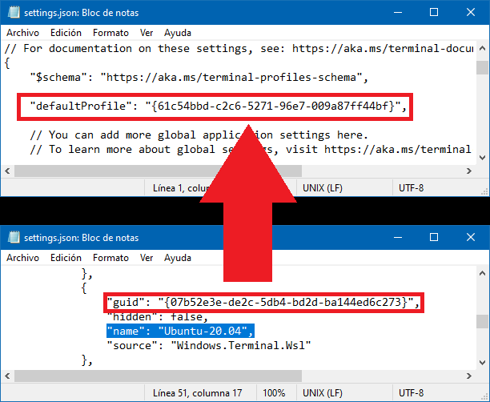
 - HeidiSQL is a free software lets you see and edit data and structures from computers running one of the database systems
MariaDB, MySQL, Microsoft SQL, PostgreSQL and SQLite.
- HeidiSQL is a free software lets you see and edit data and structures from computers running one of the database systems
MariaDB, MySQL, Microsoft SQL, PostgreSQL and SQLite.
 - MySQL Community Edition is a RDBMS freely downloadable version of the world's most popular open source database based on SQL.
- MySQL Community Edition is a RDBMS freely downloadable version of the world's most popular open source database based on SQL.
** Verify and uninstall if "Mysql installer - Communuty" is installed on your computer, and be carefully not use the web version of the installer
 - Sourcetree simplifies how you
interact with your Git repositories so you can focus on coding. Visualize and manage your repositories through Sourcetree's
simple Git GUI.
- Sourcetree simplifies how you
interact with your Git repositories so you can focus on coding. Visualize and manage your repositories through Sourcetree's
simple Git GUI.
 - Focus on what matters
instead of fighting with Git. Whether you're new to Git or a seasoned user, GitHub Desktop simplifies your development work
flow.
- Focus on what matters
instead of fighting with Git. Whether you're new to Git or a seasoned user, GitHub Desktop simplifies your development work
flow.
$cfg['Servers'][$i]['auth_type'] = 'cookie'; to request DB server user and password
If you want add PHP to your system path, use PowerShell with administrator privileges, paste next code where
"<c:\path\to\php_folder>" is the folder of php.exe:
Set-ItemProperty -Path 'Registry::HKEY_LOCAL_MACHINE\System\CurrentControlSet\Control\Session Manager\Environment'
-Name PATH -Value ((Get-ItemProperty -Path 'Registry::HKEY_LOCAL_MACHINE\System\CurrentControlSet\Control\Session
Manager\Environment' -Name PATH).path + ";<c:\path\to\php_folder>");
Fixes:
Set-ItemProperty -Path 'Registry::HKEY_CLASSES_ROOT\`*\shell\Open with Sublime Text' -Name Icon -Value "C:\Program
Files\Sublime Text 3\sublime_text.exe"
Packages to install:
Package control:
Open "view" menu and click on "show console".

Insert the next code in console:
import urllib.request,os,hashlib; h = '6f4c264a24d933ce70df5dedcf1dcaeeebe013ee18cced0ef93d5f746d80ef60'; pf = 'Package
Control.sublime-package'; ipp = sublime.installed_packages_path(); urllib.request.install_opener(
urllib.request.build_opener( urllib.request.ProxyHandler()) ); by = urllib.request.urlopen( 'http://packagecontrol.io/'
+ pf.replace(' ', '%20')).read(); dh = hashlib.sha256(by).hexdigest(); print('Error validating download (got %s instead
of %s), please try manual install' % (dh, h)) if dh != h else open(os.path.join( ipp, pf), 'wb' ).write(by)
For more information refer to https://packagecontrol.io/installation
All next packages needs to be installed from package installer in Package Control (SHIFT + CTRL + P > Package Control: Install pacakge), and typing the package name
AdvancedNewFile:https://github.com/skuroda/Sublime-AdvancedNewFile#usage
Advanced file creation for Sublime Text 2 and Sublime Text 3 (Ctrl + Alt + N)

Use: (Ctrl + Alt + N) bring up the AdvancedNewFile input. Then, enter the path, along with the file name into the input field. Upon pressing enter, the file will be created. In addition, if the directories specified do not yet exists, they will also be created. By default, the path to the file being created will be filled shown in the status bar as you enter the path information.
For more advanced usage of this plugin, be sure to look at Advanced Path Usage.
AutoFileName:https://github.com/BoundInCode/AutoFileName#usage
 Whether your making a
Whether your making a
img
tag in html, setting a image in css, or linking a
.js file to your html (or whatever else people use filename paths for these days), you can now autocomplete
the filename. Plus, it uses the built-in autocomplete, so no need to learn another pesky shortcut.
Autoprefixer:https://github.com/sindresorhus/sublime-autoprefixer#getting-started
Use: In .scss or .css open command pallete (Shift + Ctrl + P) and type Autoprefix CSS, and press enter.
For best compatibility in autoprefixer, set in user settings this config:
{"browsers": ["last 5 versions","> .5%"],}
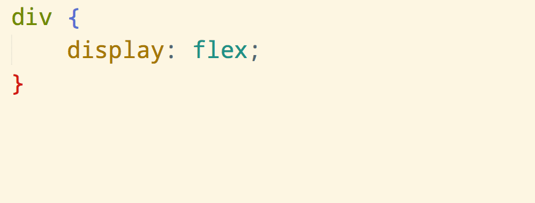
This plugin uses the Autoprefixer module to prefix properties and values according to the Can I Use database. Works with CSS and SCSS, but not other preprocessors. Requires Node.js 10+ installed
BracketHighlighter:https://facelessuser.github.io/BracketHighlighter/usage/
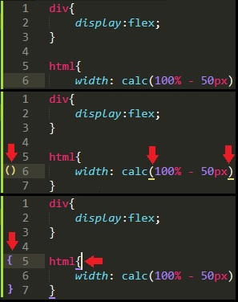
Set in Sublime Text user preferences (Preferences > Settings), next lines to avoid conflicts with BracketHighlighter and Sublime Text key bindings.
"match_brackets": false,
"match_brackets_angle": false,
"match_brackets_braces": false,
"match_brackets_content": false,
"match_brackets_square": false,
"match_tags": false
BracketHighlighter matches a variety of brackets such as: [], (), {},
"", '', <tag>;</tag>;, and even custom brackets.
This was originally forked from pyparadigm's SublimeBrackets and SublimeTagmatcher (both are no longer available). I forked his repositories to fix a number issues I add some features I had wanted. I also wanted to improve the efficiency of the matching. Moving forward, I have thrown away all of the code and have completely rewritten the entire code base to allow for more flexibility, faster matching, and a more feature rich experience.
Compass:https://packagecontrol.io/packages/Compass
Adds a Build System for Compass Watch when opening SASS Files. (Sublime-Text-2-SASS-Package or similar SASS Package needed). Create a project and place the Sublime Text Project file in your project's folder root. Example: yourproject/project.sublime-project A Sublime Text Project File in the root of your project is necessary.
REMEMBER A config.rb file is created when save/build a SASS file, move the file to project root and edit to match the folders tree and set the "output_style" (:nested, :expanded, :compact, :compressed). More information at Compass documentation
Emmet:https://github.com/emmetio/sublime-text-plugin#emmet-2-for-sublime-text-editor
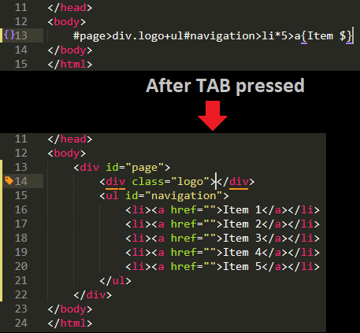
Emmet is a plugin for many popular text editors which greatly improves HTML & CSS workflow. Read the Cheat sheet for use
HTML-CSS-JS Prettify:https://github.com/victorporof/Sublime-HTMLPrettify
This is a Sublime Text 3 Plugin for reducing (Minify) or prettify (ident) the code size of HTML5, CSS3 and Javascript files.
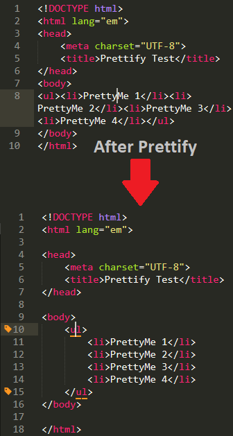
If you get an error about Node.js not being found or similar, you don't have node in the right path. Try setting the
absolute path to node in HTMLPrettify.sublime-settings. To get absolute path type in command line where node
"node_path": { "windows": "C:/path/to/node.exe", },SASS identation shows Linter warnings about identation, configure each SASS/SCSS file in 2 spaces and add next line:
"use_editor_indentation": true,Use:
Language - Spanish:https://packagecontrol.io/packages/Language%20-%20Spanish
Add Spanish spelling languages to your Sublime Text editor. Based on dictionaries Spanish from titoBouzout and superbob.
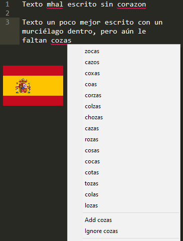
"dictionary": "Packages/Language - Spanish/es_ES.dic",
LiveReload:https://github.com/alepez/LiveReload-Sublime Text3
Enables reload page after compass SASS compilation and/or file saving.
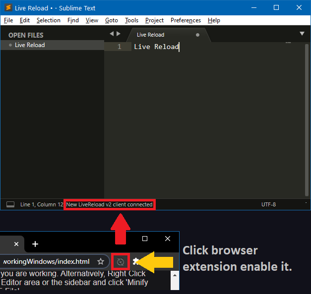
{"enabled_plugins":["CompassPlugin","SimpleReloadPluginDelay"]}To activate in Sublime Text (if not runing) goto Preferences > package settings > LiveReload > plugin-ins enable/disable. Then select Enable/Disable 400ms an activate from navigator clicking on the extension icon
Minify:https://packagecontrol.io/packages/Minify
Minify the code (like HTML-CSS-JS Prettify) and create a new file pressing Ctrl + Alt + M, but uses another sintax in js-breatify probably minifying code better than others
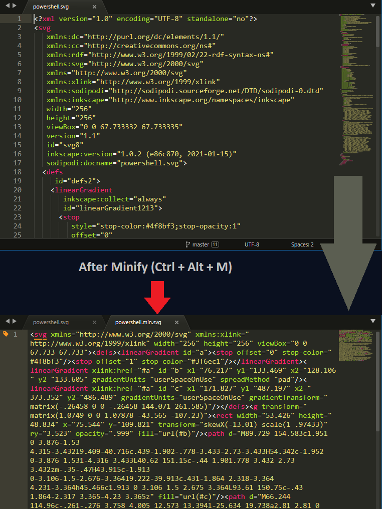
To best perform change/add the next lines in minify user settings: Preferences > Package settings > Minify > Settings - User
"html-minifier_options": "--collapse-boolean-attributes --collapse-whitespace --html5 --minify-css --minify-js
--process-conditional-comments --remove-comments --remove-empty-attributes --remove-redundant-attributes
--remove-script-type-attributes --remove-style-link-type-attributes --quote-character '",
* Force to remove line breaks on .html code
Powershell:https://packagecontrol.io/packages/PowerShell
Adds support for the MS PowerShell programming language syntax.
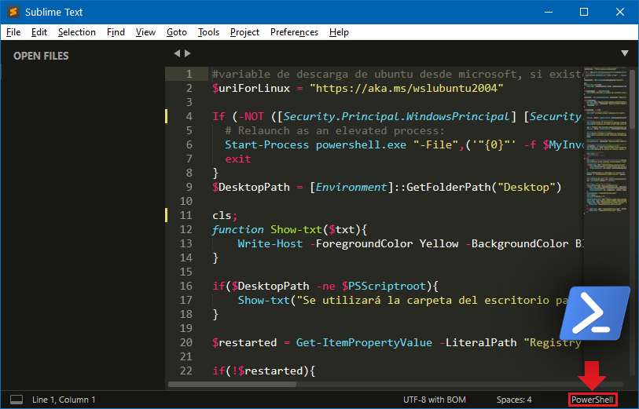
SASS:https://packagecontrol.io/packages/Sass
Includes completions for CSS properties and values, as well as relevant Sass functions. Highlights code using up to date specifications for properties and values to help you catch typos. Syntax highlighting should be very similar to CSS and LESS (which is maintained in parallel).
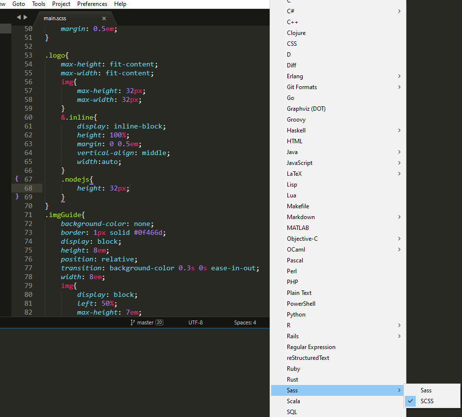
Sidebar Enhancements:https://packagecontrol.io/packages/SideBarEnhancements
Provides enhancements to the operations on Sidebar of Files and Folders for Sublime Text.
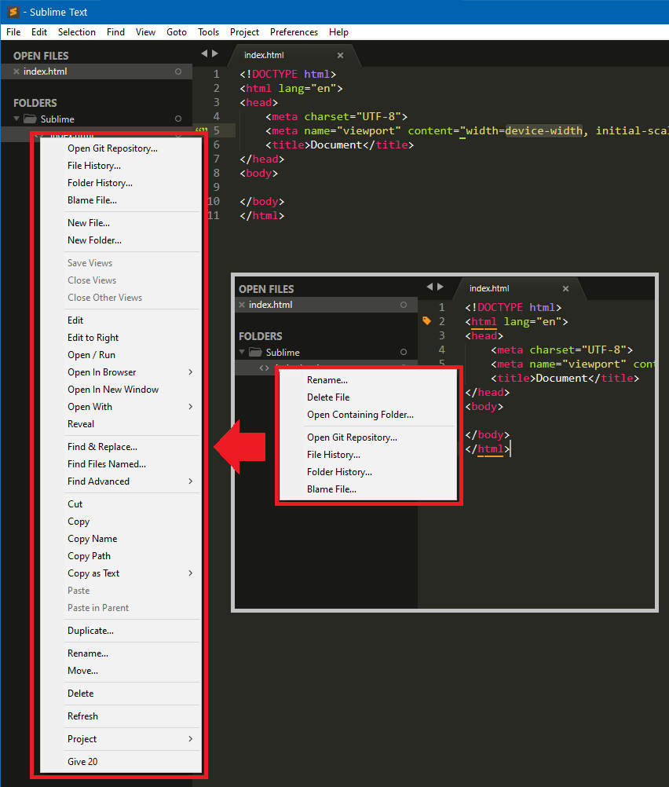
SublimeLinter:http://www.sublimelinter.com
Welcome to SublimeLinter, a linter framework for Sublime Text 3. Linters are not included, they must be installed via Package Control.
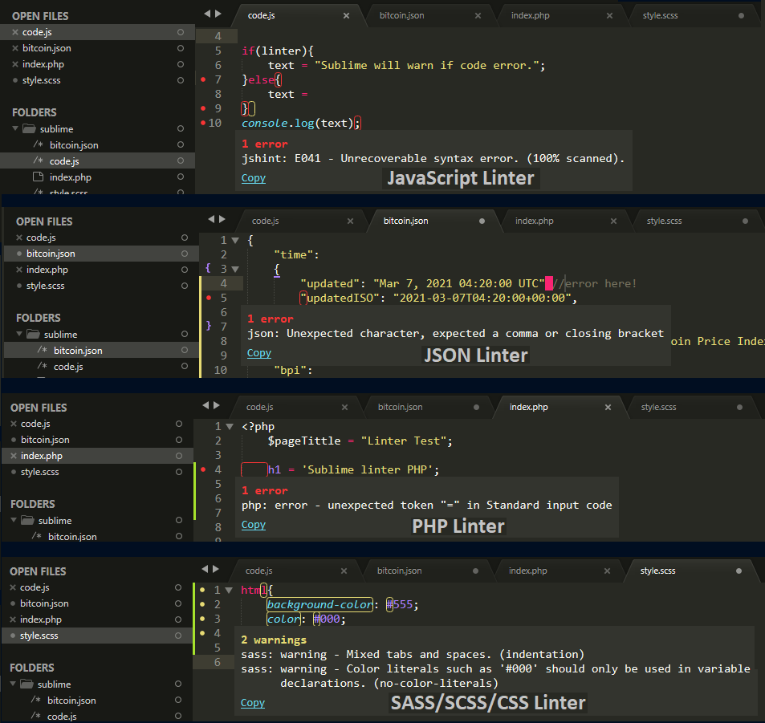
Next are the basic linters for CSS, SASS, SCSS, JavaScript, JSON and PHP.
Package name: sublimelinter-csslintRequires:
csslintnpm install -g csslint
Package name: sublimelinter-jshintRequires:
jshintnpm install -g jshint
Package name: sublimelinter-json if you want a strict use of linter (not allow comments
after coma or end files) add next code to Preferences > Package settings >
SublimeLinter > Settings"linters": {"json": {"strict": true},}
Package name: sublimelinter-contrib-sass-lintRequires:
sass-lintnpm install -g sass-lintto set ident spaces to 4 add next code to Preferences >
Package settings > SublimeLinter > Settings"linters": { "sass-lint": { "rules": {"indentation": [2, {"size": 4}]}},}
Package name: sublimelinter-phpRequires:
PHP The path to php.exe is required
to linter PHP code, go to Preferences > Package settings >
SublimeLinter > Settings an add at same level of "linters:"{} "paths": { "windows": ["<c:/path/to/php_folder>",]},
SublimeOnSaveBuild:https://github.com/alexnj/SublimeOnSaveBuild
This is a simple plugin for Sublime Text to trigger a build on each save.
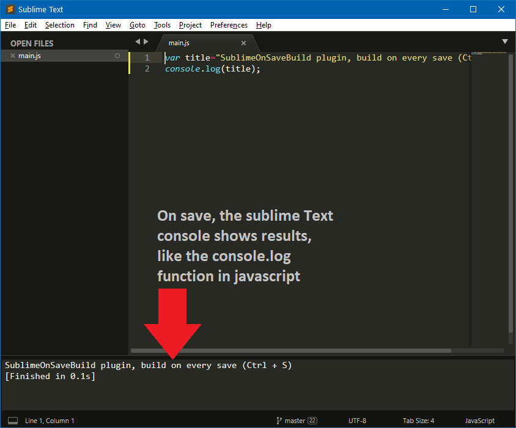
Tips:
Create a JavaScript Build for Sublime Text on Tools > Build System > New Buld System with this code:
{ "cmd": ["C:/Program Files/nodejs/node.exe", "$file"], "selector": "source.js" }
*To find nodejs path use where node from command line
and save to
%AppData%\Sublime Text 3\Packages\User\JavaScript.sublime-build
{"build_on_save": 1}
You can configure Visual Studio Code from settings.json file pressing Ctrl + P and typing
>Preferences: Open Settings (JSON). The file is JSON format, the next are some configurations that you can use
to get better experience with VSCode
"workbench.startupEditor": "none", - Starts Visual Studio witouth any tab
"powershell.buttons.showPanelMovementButtons": true, - Show the Run and Run Selection buttons in the editor
titlebar
"editor.formatOnSave": true, - Force VS Code to format text when file is saved (requires a formatter, such as
Prettier or Beautify)
"editor.formatOnPaste": true, - Force VS Code to format text whenever its pasted into a file (requires a
formatter, such as Prettier or Beautify)
"editor.acceptSuggestionOnEnter":"off", - By default VSCode accept suggestions when press enter or tab, This
options disable the
"editor.mouseWheelZoom": true, - Enable window zooming using Ctrl + Mouse wheel up/down
"editor.cursorSmoothCaretAnimation": true, - Use smooth transition in cursor movements
"workbench.editor.showTabs": true, - Highlights with a tiyn blue line the tabs where a file was moddified but not
saved. (Works only if tabs are enabled
"files.trimFinalNewlines": true, - Remove all final empty lines from a file on save
"files.insertFinalNewline": true, - Insert a final empty line at every files on save
Extension to install:
Remote WSL:https://marketplace.visualstudio.com/items?itemName=ms-vscode-remote.remote-wsl
The Remote - WSL extension lets you use VS Code on Windows to build Linux applications that run on the Windows Subsystem for Linux (WSL). You get all the productivity of Windows while developing with Linux-based tools, runtimes, and utilities.
Install: Launch VS Code Quick Open Ctrl + P, paste the following command, and press
enter. ext install ms-vscode-remote.remote-wsl
Use:You can launch a new instance of VS Code connected to WSL by opening a WSL terminal, navigating to
the folder of your choice, and typing code .. From Visual Studio Code by selecting the green remote indicator
in the lower left corner of the status bar and selecting the option you want.
Powershell:https://marketplace.visualstudio.com/items?itemName=ms-vscode.PowerShell
Install: Launch VS Code Quick Open pressing Ctrl + P, paste the following command, and
press enter. ext install powershell
Configuration: Package management update: Launch Powershell, paste the following command, and
press enter.
powershell.exe -NoLogo -NoProfile -Command '[Net.ServicePointManager]::SecurityProtocol =
[Net.SecurityProtocolType]::Tls12; Install-Module -Name PackageManagement -Force -MinimumVersion 1.4.6 -Scope
CurrentUser -AllowClobber -Repository PSGallery'
Accept any change and update (NuGet and/or PackageManagement) if asked.
Prettier - Code formatter:https://prettier.io/
Prettier is an opinionated code formatter. It enforces a consistent style by parsing your code and re-printing it with its own rules that take the maximum line length into account, wrapping code when necessary.
Install: Launch VS Code Quick Open Ctrl + P, paste the following command, and press
enter. ext install esbenp.prettier-vscode
Use: Create a configuration file to improve the use/execution of Prettier. You can read the documentation here for more information.
Configuration: Press Ctrl + P to pen Command Palette, type
>Preferences: Open Settings (JSON) and paste the code:
"editor.defaultFormatter": "esbenp.prettier-vscode",
For better "readability" and avoid a lot of lines for code, paste nex code in preferences (JSON) file (Recomend for
development and prettier
"prettier.printWidth": 140,
default is 80).
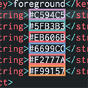
Styles css/web colors found in your document.
Install: Launch VS Code Quick Open pressing Ctrl + P, paste the following command, and
press enter. ext install naumovs.color-highlight
Configuration: Press Ctrl + P to pen Command Palette, type
>Preferences: Open Settings (JSON) to enter the configurations:
"color-highlight.matchWords": true, - If a color word is found apply the highlight
"color-highlight.markRuler": true, - Show colored square in scroll bar to indentify where a color is set.
Bracket pair colorizer:https://marketplace.visualstudio.com/items?itemName=CoenraadS.bracket-pair-colorizer
This extension allows matching brackets to be identified with colours. The user can define which characters to match, and which colours to use.
Install: Launch VS Code Quick Open pressing Ctrl + P, paste the following command, and
press enter. ext install CoenraadS.bracket-pair-colorizer
Configuration: Press Ctrl + P to pen Command Palette, type
>Preferences: Open Settings (JSON) to enter the configurations:
"bracketPairColorizer.showBracketsInGutter": true, - View brackets near line counter (left side of the code)
"color-highlight.markRuler": true, - Show colored square in scroll bar to indentify where a color is set.
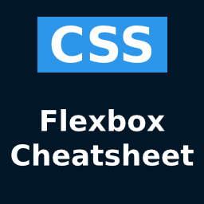
VS Code extension that lets you open a flexbox cheatsheet directly in the editor.
iii Install: Launch VS Code Quick Open pressing Ctrl + P, paste the following command,
and press enter. ext install dzhavat.css-flexbox-cheatsheet


{kind=link}
{kind=link}
{kind=link}
{kind=link}
{kind=link}
{kind=link}
{kind=link}
{kind=link}
{kind=link}
{kind=link}
{kind=link}
{kind=link}
{kind=link}